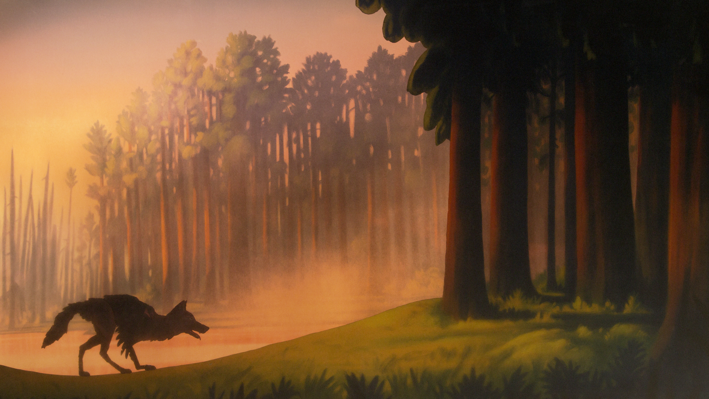

Shore
En esta cuarta entrega, Fleet Foxes vuelve con un enfoque distinto: ser agradecido también significa ser fiel a uno mismo y expresar lo que surge de forma natural.
Robin explora la profundidad de su música dejando atrás la complejidad de su letra y compartiendo nuevas mátices en cuanto a su sonido.